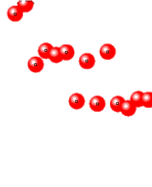
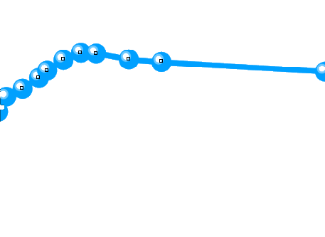

一篇外部候选的早期曲线可读
3 篇预留论文中，取得 1 篇公开全文，另 2 篇待补全文。已通过外部验收的来源仍为 0。
盐地碱蓬论文的三电极和双电极循环使用同一材料，分别核查，合计一个论文来源。两张图的报告条件为 6 M KOH、5 A/g、10,000 圈。循环电位窗和电流质量口径待核。
遮蔽后的早期证据

前 10% 初步检出 5 点，前 20% 9 点。

前 10% 初步检出 7 点，前 20% 8 点。
图中只显示早期对应颜色像素，黑框为暂定标记中心。重叠或贴近边框的点需要复核。已检查 96 项证据与边界，本轮尚无已锁定的外部预测，终点值保持封存。
图源 Zhao 等，Nanomaterials 2026，原图经裁剪和颜色遮蔽，CC BY 4.0。出版商原文